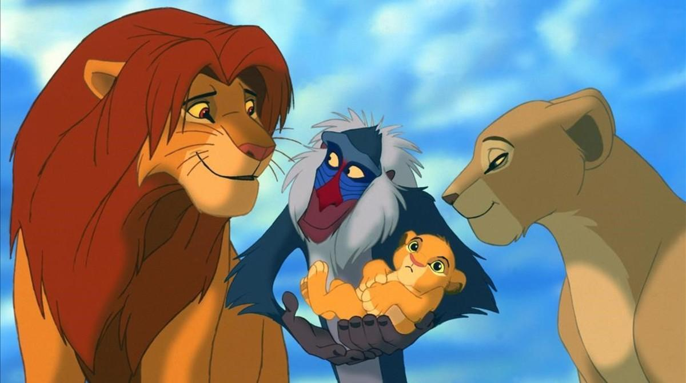

Argumento
En Las Tierras del Reino, el león Mufasa gobierna a todos los animales como su rey junto con su esposa Sarabi. El nacimiento de su hijo y heredero, Simba, provoca resentimiento en el hermano de Mufasa, Scar, que anhela convertirse en el nuevo rey. El tiempo transcurre y el cachorro es instruido por su padre sobre las responsabilidades que habrá de tener cuando se convierta en el nuevo soberano. Mientras tanto, Scar trama un siniestro plan para deshacerse de sus familiares y apoderarse del trono. Primeramente engaña a Simba y a su amiga Nala al incitarlos a explorar un cementerio de elefantes ubicado en una región apartada de las Tierras del Reino. Pese a las advertencias de Mufasa sobre ese lugar, la curiosidad de Simba y Nala los lleva hasta ese sitio. Al llegar, son atacados por las hienas Shenzi, Banzai y Ed, quienes trabajan para Scar.
Por aviso de Zazú, un toco que trabaja como mayordomo real, Mufasa se entera de la desobediencia de Simba, y llega a tiempo al cementerio para rescatarles y llevarlos de vuelta al reino. Enterado de su fallido intento por deshacerse de Simba, al día siguiente Scar guía a su sobrino hasta un cañón donde le pide que espere en lo que llega Mufasa. Después de abandonar el cañón, Scar le pide a las hienas que espanten a una manada de ñus para provocar una estampida. Mufasa aparece nuevamente y logra poner a salvo a su hijo, sin embargo cuando trata de escalar uno de los bordes para evitar la estampida es empujado por Scar y muere pisoteado por los ñus. Cuando la estampida termina, Simba se encuentra con el cadáver de su padre y Scar aprovecha la ocasión para culparlo de lo acontecido y pedirle que abandone las Tierras del Reino con tal de evitar represalias por la muerte del rey. El joven huye así del reino y deja libre el trono a Scar, que se proclama como el nuevo soberano ante la desaparición de Mufasa y Simba.

En medio de su huida, Simba cae exhausto en medio de una región desértica en donde es encontrado por el suricato Timón y el facóquero Pumba, que lo protegen y llevan consigo a una selva, en donde habitan juntos hasta que el león crece y alcanza su etapa adulta. Un día, Simba se reencuentra con Nala en la selva y descubren que están enamorados uno del otro. Nala lo insta a que regrese a las Tierras del Reino y reclame el trono, que se ha convertido en un páramo sin agua ni comida suficiente bajo el mandato de Scar. Sin embargo, Simba se rehúsa a seguir su recomendación ya que continúa sintiéndose culpable por la muerte de su padre. No es sino hasta su encuentro con Rafiki, amigo y mayordomo de Mufasa, quien le confiesa a Simba que su padre está vivo y a quien lleva a verlo. Una vez en el lugar, Mufasa se aparece a su hijo y le insta a que regrese y ocupe su lugar como rey, por lo que Simba finalmente supera la muerte de su padre y es entonces cuando decide regresar de vuelta a las Tierras del Reino para acabar con el reinado de su tío.
Con la ayuda de sus amigos, Simba se cuela entre las hienas en La Roca del Rey y se enfrenta a Scar, quien se burla de Simba por su supuesto papel en la muerte de Mufasa y lo lleva hasta el borde de la roca. Enfurecido por la revelación de que Scar mató a Mufasa, Simba toma represalias y obliga a Scar a confesar la verdad al resto de la manada. Se desata una guerra entre Simba y sus aliados y las hienas. Scar intenta escapar, pero Simba lo acorrala en una cornisa cerca de la cima de la Roca del Rey. Scar ruega por misericordia y culpa a las hienas de sus acciones; Simba le perdona la vida a Scar pero, citando lo que Scar le dijo hace mucho tiempo, le ordena que abandone las Tierras del Reino para siempre. Scar se niega y ataca a Simba, pero después de una breve batalla final, Simba arroja a Scar desde la cornisa al suelo. Scar sobrevive a la caída, pero las hienas, que lo escucharon traicionarlos, lo destrozan y lo devoran vivo. Simba se reencuentra con Nala y Sarabi, así como sus amigos Timón y Pumba, y es proclamado como el nuevo rey de Tierras del Reino. En las últimas escenas, y transcurrido un tiempo de la asunción de Simba, se aprecia a Rafiki presentando al cachorro de Simba y Nala a los demás animales del reino.